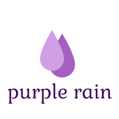

<br/>
<mat-toolbar color= "primary">

<span class="flex-filler"></span>
<button mat-button color="accent" class="nav-btn" routerLink="/location">my locations</button>
<button mat-button color="accent" class="nav-btn" routerLink="/login"> &nbsp; &nbsp; &nbsp;login &nbsp; &nbsp; &nbsp;</button>
<button mat-button color="accent" class="nav-btn"routerLink="/register">new account</button>
</mat-toolbar>
<br/>
<br/>
<br/>